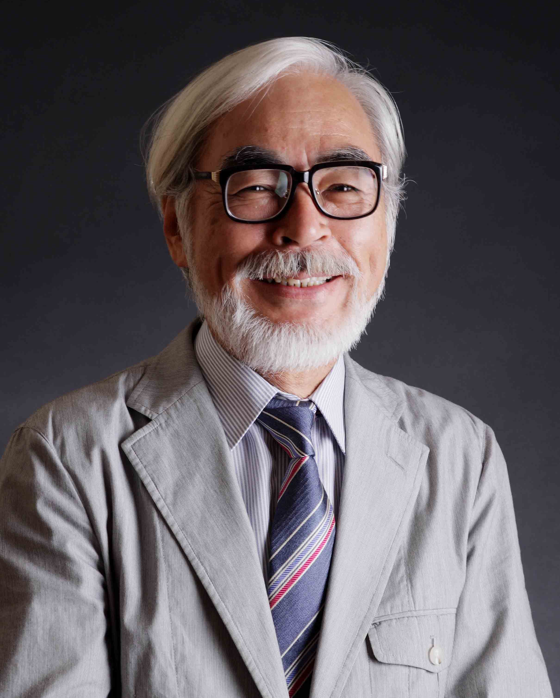

Biografia

Hayao Miyazaki è nato il 5 gennaio 1941 a Tokyo, Giappone. È un regista, sceneggiatore, animatore e produttore cinematografico giapponese. Ha co-fondato lo Studio Ghibli nel 1985 e ha diretto numerosi film d'animazione di successo.
Curiosità
- Ha vinto l'Oscar per il miglior film d'animazione con "La città incantata".
- È noto per il suo amore per la natura e spesso include temi ecologici nei suoi film.
- Ha annunciato il suo ritiro più volte, ma è sempre tornato a lavorare su nuovi progetti.
Opere Principali
- Il castello errante di Howl
- La città incantata
- Principessa Mononoke
- Il mio vicino Totoro
- Ponyo sulla scogliera